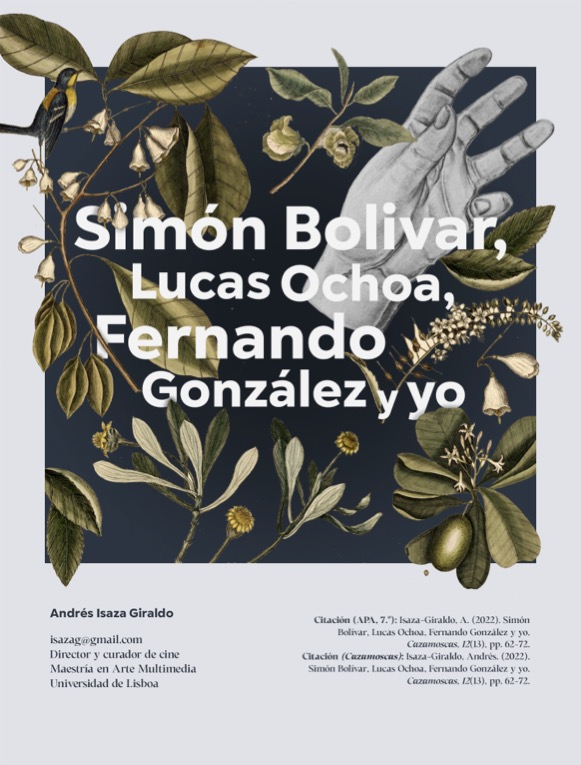

Andrés Isaza-Giraldo, Paulo Bala, Terhi Marttila, Rafaela Nunes and Pedro Campos
Proceedings of the International Symposium on Electronic/Emerging Art: 2025, Seoul, Republic of Korea, Art Center Nabi, Institute for Culture and Arts Seoul National University, 2025, pp. 1124-1128
Indigenous worldviews place humans as deeply interconnected to nature. However, digital materials often limit the production of non human-centric experiences. Building on work that places perspectivism as a core tenet for artistic creation, we explore thinking from the perspective of water in the creation Being Water, an interactive experience representative of confluence of different digital media. This collaboration demonstrates how digital media can simulate and express the agency of non-human entities, challenging human-centric design paradigms. The project incorporates diverse artistic approaches, such as immersive video capturing by rivers and seas, poetic narratives inspired by the water cycle, and AI-generated visuals. Supporting and incorporating Large Language Models in the creative process, we reflect on the role of machines as tools for perspectivism while highlighting the limitations of current AI systems in representing other ontological perspectives.
Luiz Sachser, Andrés Isaza-Giraldo, Anna Jiskrová, Vanessa Cesário, Pedro F. Campos, Lucas Pereira, Paulo Bala
Companion Publication of the 2025 ACM Designing Interactive Systems Conference, ACM, 2025, pp. 289–293
Energy Communities (ECs) are confronted by diverse and intricate challenges concerning sustainability development goals and climate change awareness. This demonstration introduces En-join, a speculative game that addresses these complexities by using Large Language Models (LLMs) to engage players in negotiating solutions for such challenges. En-join demonstrates a novel approach by integrating an LLM as a dual-agent, serving simultaneously as a narrative guide and evaluator, to simulate EC dynamics. Players interact with LLM-powered Non-Player Characters (NPCs) to navigate open-ended scenarios, promoting reflection on sustainability and community participatory decisions on their own resources, alongside pro-social behaviors. This work highlights the potential of LLMs as mediators in serious games, fostering engagement and critical thinking on sustainable energy practices.
En: Catálogos Razonados: Becas de curaduría, Coordinación y revisión editorial: Catalina Posada Pacheco, Cinemateca de Bogotá, Gerencia de Artes Audiovisuales del Instituto Distrital de las Artes - Idartes; Alcaldía Mayor de Bogotá D.C., 2024, pp. 8-19. ISBN: 978-628-7686-59-5
Entre la anécdota, la correspondencia y la reflexión, el recorrido de un proyecto entre amigos. En 2018, realizamos la curaduría audiovisual Un mundo sin adultos con la idea de preguntar qué movilizaba la ausencia de adultos en nuestras formas de ver cine. La curaduría se transformó en una escuela y nos ayudó a seguir las pistas de intuiciones y conexiones entre un corpus de películas diversas, cada una de las cuales ofrece una respuesta diferente a la negación del adulto. Las películas son presentadas aquí en tres líneas temáticas: juego, caos y descubrimiento. Imaginamos también nuevos caminos para el cine colombiano, del cual hemos hecho parte con la puesta en escena de un encuentro. Nos cuestionamos las ideas de los padres cinematográficos que perviven aún en el cine contemporáneo y reclamamos el hacer juntos como amigos de forma cariñosa y política.
Andrés Isaza-Giraldo, Paulo Bala, Anna Jiskrová, Luiz Sachser, Pedro Campos, Lucas Pereira
Proceedings of the Extended Abstracts of the CHI Conference on Human Factors in Computing Systems (CHI EA '25), ACM, 2025
Energy communities are emerging frameworks where citizens collectively share renewable energy. Levering knowledge about this topic is challenging for how varied these types of communities might be and how many actors are involved in decision taking. We are developing En-join, a game in which the player has to solve open-ended challenges that are mediated and evaluated by conversational agents that represent members of an energy community. We implemented and prompted an LLM (Phi-4) to perform role-playing and evaluation simultaneously. We tested prompt variants indicating personality and behavior and meta-evaluated the evaluation performance using six predefined answers across three levels. Our results suggest that indicating social preferences noticeably affects the evaluation behavior. We contribute to the field of games and serious games by showing how LLMs can be used as conversational characters and evaluator agents simultaneously, and suggest that role-playing might be affecting evaluation behavior in any LLM implementations.
Human-centered Evaluation and Auditing of Language Models HEAL Workshop (HEAL@CHI'25), Yokohama, 2025
The evaluation of open-ended responses in serious games presents a unique challenge, as correctness is often subjective. Large Language Models (LLMs) are increasingly being explored as evaluators in such contexts, yet their accuracy and consistency remain uncertain, particularly for smaller models intended for local execution. This study investigates the reliability of five small-scale LLMs when assessing player responses in \textit{En-join}, a game that simulates decision-making within energy communities. By leveraging traditional binary classification metrics (including accuracy, true positive rate, and true negative rate), we systematically compare these models across different evaluation scenarios. Our results highlight the strengths and limitations of each model, revealing trade-offs between sensitivity, specificity, and overall performance. We demonstrate that while some models excel at identifying correct responses, others struggle with false positives or inconsistent evaluations. The findings highlight the need for context-aware evaluation frameworks and careful model selection when deploying LLMs as evaluators. This work contributes to the broader discourse on the trustworthiness of AI-driven assessment tools, offering insights into how different LLM architectures handle subjective evaluation tasks.
Being Water is an IDN experience that speculates about the ways of being of water in the world. It combines 360° video, artifact-beings, voice-over and atmospheric sound. In a first iteration, users navigate through the environment to listen to authorial text. This paper's focus is on second iteration in which we experiment with integrating generative AI (genAI) to various degrees (e.g., augmenting interaction, making it replayable, sustaining a narrative) by using authorial text and scene context. We discuss preliminary findings in using LLMs as a collaborator to make meaningful additions to digital artworks.
Anna Jiskrová, Andrés Isaza-Giraldo, Pedro Campos, Vanessa Cesário
ArtsIT, Interactivity and Game Creation (ArtsIT 2024), Springer Nature Switzerland, Cham, 2026, pp. 189-199
This research explores the significance of visual elements – specifically graphics and illustrations – in serious games designed for educational purposes, targeting teenagers. The paper focuses on the applicability of design elements to enhance engagement in a game currently in development that educates about energy communities. The game, EN-JOIN, uses a text-based interface where players interact by typing answers, which are evaluated by a Large Language Model (LLM). This interactive "conversation" guides players through various levels, contributing to the storyline and educational objectives. Our approach incorporates inclusive design, emphasizing the portrayal of diverse cultures, genders, and identities. By leveraging simplified, symbolic visuals, we aim to create an engaging and empathetic experience without overwhelming players. This study addresses the challenges of balancing complexity and simplicity in visual design, ensuring that characters and scenarios are relatable yet free from stereotypes. The game aims to make players aware of their environmental impact and encourages them to engage with sustainable energy practices.
Master's Dissertation, Universidade de Lisboa, Faculdade de Belas-Artes. Advisor: Susana de Sousa Dias. Defense: 3-Jul-2024
This work seeks to understand the physical and metaphysical dimensions of rivers and how they can be expressed as a cinematographic process. It proposes a film that is analogous to the river in its form, volume and time, through different ontological and artistic perspectives. Three main questions are addressed: how to film the rivers of the future, how to make a mirror film and how to film from the visual cortex. Although these questions may seem impossible to answer in a practical way, possible approaches are speculated, both philosophical, artistic and scientific. The figure of Narcissus in contemporary art reveals an obsession with creation and the media itself. In addition, Narcissus is interpreted as a representation of contemporary social illness, because technical modernity has left human latency dormant in us. The work draws on the philosophy and mythology of various native peoples, especially in the Amazon River basin, who describe the practices of dreaming and connecting with the spirit world. A cure for modern dormancy is proposed through a reflective film that invites the viewer to experience the flow of Narcissus and his metamorphosis into a river. After reviewing rivers, mirrors and the visual cortex from a reductionist perspective, a unity of concepts in the cranial box is proposed in a scientific-poetic speculation. In the mid of these digressions are the artist's dreams and his subjective perception of the natural and artificial world, as well as the technical decisions that thought forces in the construction of a river-mirror-cortex film, which include 360º camera footage and machine learning algorithms. Instead of arriving at concrete elaborations, the essay proposes the liberation of the symbolic state of art and the free formation of art both in the object and in the viewer. In the end, all that remains is silence.
Andrés Isaza-Giraldo, Paulo Bala, Pedro F. Campos, Lucas Pereira
Extended Abstracts of the CHI Conference on Human Factors in Computing Systems (CHI EA '24), ACM, 2024, Honolulu, HI, USA
Building on previous work on incorporating large language models (LLM) in gaming, we investigate the possibility of implementing LLM as evaluating agents of open-ended challenges in serious games and its potential to facilitate a meaningful experience for the player. We contribute with a sustainability game prototype in a single natural language prompt about energy communities and we tested it with 13 participants inside ChatGPT-3.5. Two participants were already aware of energy communities before the game, and eight of the remaining 11 gained valuable knowledge about the specific topic. Comparing ChatGPT-3.5 evaluations of players’ interaction with an expert’s assessment, ChatGPT-3.5 correctly evaluated 81% of player’s answers. Our results are encouraging and show the potential of using LLMs as mediating agents in educational games, while also allowing easy prototyping of games through natural language prompts.
Andrés Isaza-Giraldo, Manuel Pereira, Rafael Candeias, Lucas Pereira
In: Galvão, J.R.C.S., Brito, P., Neves, F.S., Almeida, H.A., Mourato, S.J.M., Nobre, C. (eds) Proceedings of the 3rd International Conference on Water Energy Food and Sustainability (ICoWEFS 2023). Springer Nature Switzerland, Cham, 2024, pp. 79–89
This paper proposes a methodology for visualizing satellite-based machine learning (ML) datasets to understand the visual components that will be used as inputs for developing ML models. The proposed methodology uses t-Distributed Stochastic Neighbor Embedding (T-SNE) methods to create visualizations of satellite images leveraging models that were pre-trained in ImageNet. T-SNE is a self-supervised learning tool used to transform high-dimensional spaces into two- or three-dimension embeddings, making it easier to visualize a broad dataset in a single image or space. The methodology is demonstrated using the LUCAS Topsoil Analysis dataset with satellite images from Sentinel-2. The dataset was constructed using the TerraSense Toolkit (TSTK). The T-SNE visualization tool aims to improve ML research by providing a clearer visual understanding of satellite-based datasets. Download preprint (PDF)
Revista Cazamoscas, Revista Filosófica, 12(13), pp. 62-72, 2022

No podría decir con certeza quién habla ahora, si eres tú Lucas, si es Fernando o si soy yo. Si no pudiera convencerlos de eso, hablaremos a continuación de una novela. Pero eso no sería propósito cierto, pues mi empresa es convencernos de que Mi simón Bolívar (González, 2015) es, pese y gracias a sus niveles de ficción, un ensayo.
Mi Simón Bolívar (2015) es, como parece evidente, un libro sobre Simón Bolívar. O, más bien, un libro que precede la biografía de Simón Bolívar, pues la biografía sería el segundo volumen. Si ese volumen se hubiese terminado, se habría llamado El Libertador y contendría una grandeza del tamaño de Suramérica. El primer volumen, publicado en 1930, es una meditación que pudiese equivaler a Simón Bolívar en Jamaica o a los últimos días de Jesús en el desierto (González, 2015): meditaciones anteriores a una gran obra vital.
Lucas Ochoa es un hombre de método y de ello da evidencia desde que a los ocho años escribió su primer ensayo psicológico sobre el Dolor (González, 2015). Para escribir Mi Simón Bolívar ha usado un método que llamó el método emocional. Ochoa se propuso, en carne y espíritu, revivir a Bolívar, vivirlo en sí y dejar que Bolívar viva en él sin perder «de vista que el universo es el objeto y que no debemos ser poseídos» (González, 2015, p. 3). Este método podría ser justo eso, revivir a Bolívar — de ahí que el título lleve el posesivo mi—, pero parece ser un proceso más complejo que lo que el libro pudiera vislumbrar y que pretende hacer inseparable la sustancia presente de Ochoa de la sustancia histórica de Bolívar y, a su vez, de la sustancia de Fernando González, el autor de este libro. ¿Cómo se vive con un gran héroe adentro, con una conciencia del tamaño de Suramérica como la tuvo Bolívar?, ¿a qué prudencia y con cuál régimen debe uno someterse para meditar la profunda crisis que fueron sus días gloriosos?
Revista Correspondencias: Mística, Año 05, No. 15, Invierno 2021, Ciudad de México, 2021
“La elevación paramuna” es un ensayo crítico y poético que traza un mapa alternativo del paisaje fílmico del páramo andino, especialmente en Colombia. Andrés Isaza explora cómo este ecosistema ha sido representado en el cine a lo largo del tiempo, desde los primeros registros de mediados del siglo XX hasta producciones contemporáneas. A través de ejemplos como El páramo de Cumanday, Siete cabezas, Nuestra voz de tierra, memoria y futuro y El valle sin sombras, el autor analiza la dimensión simbólica, ecológica, espiritual y política del páramo en el cine. El texto cuestiona la hegemonía visual del norte global y propone una crítica cartográfica centrada en lo local, incorporando elementos de la geografía, la historia natural, el pensamiento indígena y la memoria colectiva. El ensayo se convierte así en una invitación a ver y pensar el páramo no solo como un escenario natural, sino como un territorio de resistencia, transformación y profunda sensibilidad humana.
Audiovisual artist, researcher and curator born in Manizales, Colombia. He graduated with honors from the Film and Television undergraduate program from the National University of Colombia in Bogota and has an MFA in Multimedia Art from the University of Lisbon. He is currently a PhD candidate at the Digital Media programe at the University of Porto. He has directed the short film Medias blancas (2017), Serene Wind (2022), and The Last Film on Earth (2023) premiered in festivals such as FICUNAM in Mexico City; FICCI in Cartagena, Colombia; Beijing International Short Film Festival; Stuttgarter Filmwinter in Germany; among others. His film work explores the relationship of time in the personal-historical-ecological world and the media itself; often bringing together a holistic view of scientific and spiritual optics.
He is researcher at i2ADS, Research Institute in Art, Design and Society at the Faculty of Fine-Arts of the University of Porto, where he works in visualizing the history of cinema and the co-creation of new audiovisual archives. He was a researcher at the Interactive Technologies Institute in Portugal under the eGames Lab project, where he developed educational environmental video-games implementing language models to increase the meaningful potential of user experience.
He programmed the showcase Un Mundo Sin Adultos, winner of an audiovisual curatorial grant from Idartes and exhibited at Cinemateca de Bogotá and Museo de Arte Moderno de Medellín MAMM; curated and programmes the category Film (&) Digital for the 19-20 International Image Festival in Manizales, Colombia; served as Guest Coordinator for the 19 IndiLisboa IFF; was Chief Programmer fr the 18 Equinoxio University Film Festival; and assistant programmer for the 20 International Documentary Exhibition of Bogotá MIDBO
He has worked in color grading for various short-films such as Things Among Days (Mateo Vallejo, 2021), Intentos para dejarse caer (Jonas Radziunas, 2021), Los innombrables (Sara Fernández, 2018), Sin sangre (Sara Fernández and Juan Carlos Sánchez, 2016), among others. He directed several music videos for bands such as Nicolás y los Fumadores.
Drop me a line: isazag [at] gmail [dot] com You may use this pronouns: (he,they/him,them)
Artista audiovisual, investigador y curador nacido en Manizales, Colombia. Se graduó con honores de Cine y Televisión en la Universidad Nacional de Colombia — Sede Bogotá y maestría en Arte Multimedia de la Universidad de Lisboa. Actualmente cursa estudios doctorales en Digital Media en la Universidade do Porto. Ha dirigido los cortometrajes Medias blancas (2017), Sereno (2022) y La última película (2023) estrenados en festivales como FICUNAM, FICCI, Beijing International Short Film Festival, Stuttgarter Filmwinter, entre otros. Su trabajo explora la relación del tiempo en el mundo personal-histórico-ecológico y el propio medio; trayendo una mirada holística con ópticas científicas y místicas.
Es investigador en i2ADS, Instituto de Investigação em Arte, Design e Sociedade de la Faculadade de Belas-Artes de la Universidade do Porto, donde trabaja con visualización de la historia del cine y co-creación de nuevos archivos cinematográficos. Fue investigador en el Interactive Technologies Institute bajo el projecto eGames Lab, donde desarrolló videojuegos educativos alrededor de temas medioambientales incorporando modelos de lenguaje para aumentar el impacto significativo de las experiencias.
Programó la curaduría Un Mundo Sin Adultos ganadora de la Beca de Curaduría Audiovisual Idartes y exhibida en la Cinemateca de Bogotá y el Museo de Arte de Medellín MAMM. Fue curador de la categoría Cine (y) Digital del 19-20 Festival Internacional de la Imagen, coordinador de invitados para el 19 IndieLisboa IFF, Jefe de Programación del 18 Festival Equinoxio y asistente de la programación de la Muestra Internacional Documental de Bogotá 20 MIDBO.
También ha hecho corrección de color para varios cortometrajes como Antes de las cosas (Mateo Vallejo, 2021), Intentos para dejarse caer (Jonas Radziunas, 2021), Los innombrables (Sara Fernández, 2018), Sin sangre (Sara Fernández y Juan Carlos Sánchez, 2016), entre otros. Realizó videos musicales para bandas como Nicolás y los Fumadores, Andrés Gualdrón (Animal Blanco) y Bliss.
Déjame un mensaje en: isazag [arroba] gmail [punto] com Usa estos pronombres: (él,elle)
 Entre la anécdota, la correspondencia y la reflexión, el recorrido de un proyecto entre amigos. En 2018, realizamos la curaduría audiovisual Un mundo sin adultos con la idea de preguntar qué movilizaba la ausencia de adultos en nuestras formas de ver cine. La curaduría se transformó en una escuela y nos ayudó a seguir las pistas de intuiciones y conexiones entre un corpus de películas diversas, cada una de las cuales ofrece una respuesta diferente a la negación del adulto. Las películas son presentadas aquí en tres líneas temáticas: juego, caos y descubrimiento. Imaginamos también nuevos caminos para el cine colombiano, del cual hemos hecho parte con la puesta en escena de un encuentro. Nos cuestionamos las ideas de los padres cinematográficos que perviven aún en el cine contemporáneo y reclamamos el hacer juntos como amigos de forma cariñosa y política.
Entre la anécdota, la correspondencia y la reflexión, el recorrido de un proyecto entre amigos. En 2018, realizamos la curaduría audiovisual Un mundo sin adultos con la idea de preguntar qué movilizaba la ausencia de adultos en nuestras formas de ver cine. La curaduría se transformó en una escuela y nos ayudó a seguir las pistas de intuiciones y conexiones entre un corpus de películas diversas, cada una de las cuales ofrece una respuesta diferente a la negación del adulto. Las películas son presentadas aquí en tres líneas temáticas: juego, caos y descubrimiento. Imaginamos también nuevos caminos para el cine colombiano, del cual hemos hecho parte con la puesta en escena de un encuentro. Nos cuestionamos las ideas de los padres cinematográficos que perviven aún en el cine contemporáneo y reclamamos el hacer juntos como amigos de forma cariñosa y política.
 This paper proposes a methodology for visualizing satellite-based machine learning (ML) datasets to understand the visual components that will be used as inputs for developing ML models. The proposed methodology uses t-Distributed Stochastic Neighbor Embedding (T-SNE) methods to create visualizations of satellite images leveraging models that were pre-trained in ImageNet. T-SNE is a self-supervised learning tool used to transform high-dimensional spaces into two- or three-dimension embeddings, making it easier to visualize a broad dataset in a single image or space. The methodology is demonstrated using the LUCAS Topsoil Analysis dataset with satellite images from Sentinel-2. The dataset was constructed using the TerraSense Toolkit (TSTK). The T-SNE visualization tool aims to improve ML research by providing a clearer visual understanding of satellite-based datasets.
This paper proposes a methodology for visualizing satellite-based machine learning (ML) datasets to understand the visual components that will be used as inputs for developing ML models. The proposed methodology uses t-Distributed Stochastic Neighbor Embedding (T-SNE) methods to create visualizations of satellite images leveraging models that were pre-trained in ImageNet. T-SNE is a self-supervised learning tool used to transform high-dimensional spaces into two- or three-dimension embeddings, making it easier to visualize a broad dataset in a single image or space. The methodology is demonstrated using the LUCAS Topsoil Analysis dataset with satellite images from Sentinel-2. The dataset was constructed using the TerraSense Toolkit (TSTK). The T-SNE visualization tool aims to improve ML research by providing a clearer visual understanding of satellite-based datasets.